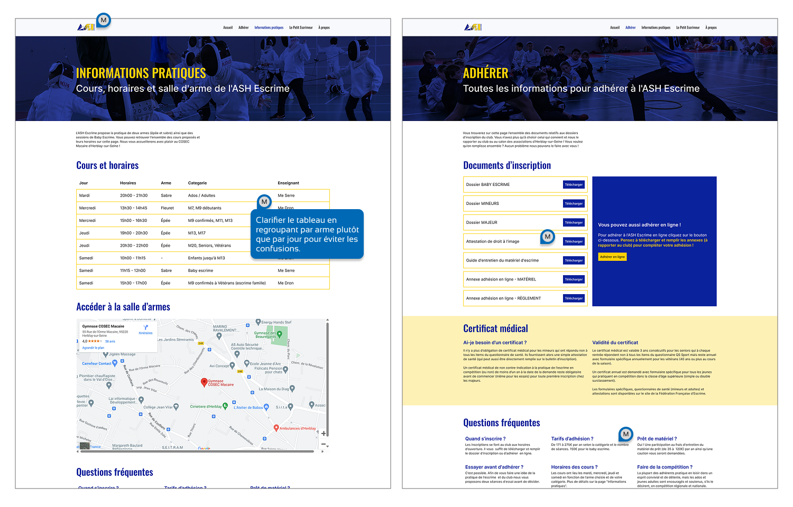

ASH Escrime
Design de processus Club sportifEn plus d’être designer, je suis également un escrimeur passionné et membre du comité directeur de mon club. Mettre ses compétences au service d’une association pose quelques défis, nécessitant notamment beaucoup de pédagogie. Dans ce cadre, j’ai mené une refonte du site internet du club ainsi que des dossiers d’inscription, avec pour objectif de simplifier les processus d’inscription pour les adhérents et les bénévoles.
Comment transformer les processus établis et conduire le changement pour un public non expert dans un cadre associatif ?
1. Partir d’observations terrain factuelles
Après plusieurs salons associatifs et sessions d’inscription, il est apparu que de nombreuses personnes n’arrivaient pas à trouver les informations utiles, remplissaient les mauvais dossiers ou commettaient des erreurs. Cela représentait 30 à 40 % de dossiers défaillants, entraînant un travail conséquent pour les bénévoles.
Après un audit de l’existant, j’ai identifié plusieurs points d’amélioration, notamment une architecture de l’information peu optimisée sur le site web et des contenus peu accessibles. Présenter cette idée a nécessité beaucoup de pédagogie, notamment sur les impacts et les aspects techniques de la refonte.
2. Prototyper et mettre en main rapidement
Le temps associatif est très différent du temps professionnel. Une fois une idée soumise et acceptée, il convient de la matérialiser rapidement pour éviter qu’elle ne se perde au milieu des nombreuses autres activités qui incombent aux bénévoles (moi y compris !).
J’ai donc commencé par la refonte du site internet (qui représentait le travail le plus important) et lancé le prototypage après un benchmark externe et une analyse des bonnes pratiques existantes. Ces prototypes ont ensuite été présentés afin de recueillir des retours et affiner les interfaces avant d’entamer le développement.
Une fois la question du site internet réglée, je me suis attaqué aux dossiers d’inscription. Les précédents introduisaient des modes de remplissage intéressants (notamment au niveau de la grille tarifaire), qui ont été conservés, mais manquaient par endroits de clarté. De plus, ils étaient conçus pour une impression A3, ce qui empêchait des impressions d’urgence et obligeait les adhérents à remplir une version A4 très réduite lorsqu’ils imprimaient le dossier en avance depuis chez eux.
Je suis donc reparti sur un format A4 avec pour objectif de réduire au maximum les papiers à remplir. Cela a nécessité une réflexion approfondie sur l’organisation du contenu et ses modes de remplissage. Après la réalisation d’une première version, j’ai organisé une réunion de bureau pour un atelier de retours. J’ai imprimé un exemplaire du dossier complet pour chaque membre du bureau afin que tous puissent l’avoir en main. Nous l’avons parcouru ensemble pour que chacun puisse émettre ses suggestions. Les derniers détails ont été ajustés avant validation.
3. Aller jusqu’au bout et mettre en place soi-même
Pour revenir sur le site internet, j’ai dû le développer moi-même avec mes connaissances basiques en HTML, CSS et PHP WordPress. J’ai opté pour un gestionnaire de contenu comme WordPress, car son interface de gestion peut être personnalisée avec des consignes et des indications de paramétrage grâce à différents plug-ins. L’objectif ici était de permettre à n’importe qui de reprendre la gestion du site si jamais je n’étais plus en mesure de le faire.
Ici encore, la pédagogie a été essentielle pour faire comprendre les aspects techniques à des interlocuteurs non experts. Un autre défi a été de gérer la relation avec le précédent gestionnaire du site : dans une association, chacun souhaite apporter sa pierre à l’édifice et bien faire. Voir quelqu’un proposer un nouveau site a pu être perçu comme une critique du travail existant. Il a donc fallu expliquer les avantages du changement tout en valorisant les éléments conservés. Grâce au dialogue, aux concessions (notamment sur l’infrastructure serveur) et à la diplomatie, ce site a pu voir le jour !
Vous pouvez y accéder via le lien suivant : https://www.escrime-herblay.com
Conclusion
Transformer les processus établis et accompagner le changement dans un cadre associatif requiert une approche à la fois pragmatique et pédagogique. Il est essentiel de partir d’observations factuelles pour identifier les véritables besoins.
La mise en place rapide de prototypes concrets permet de rendre les idées tangibles et d’obtenir des retours pertinents, facilitant l’adoption des nouvelles solutions. Enfin, l’aspect humain joue un rôle central : prendre en compte les sensibilités, expliquer les enjeux techniques avec clarté et valoriser le travail existant sont des éléments indispensables pour assurer une transition en douceur et réussir la conduite du changement avec un public non expert.